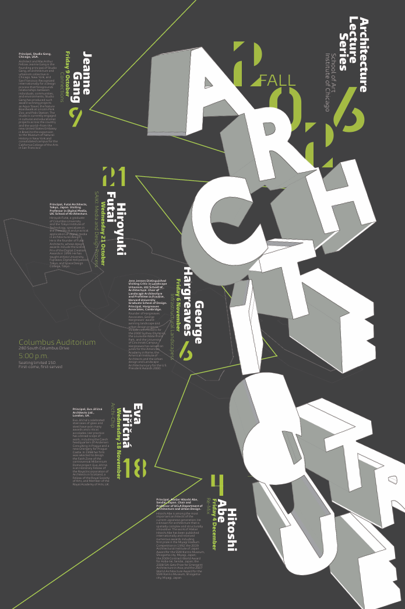
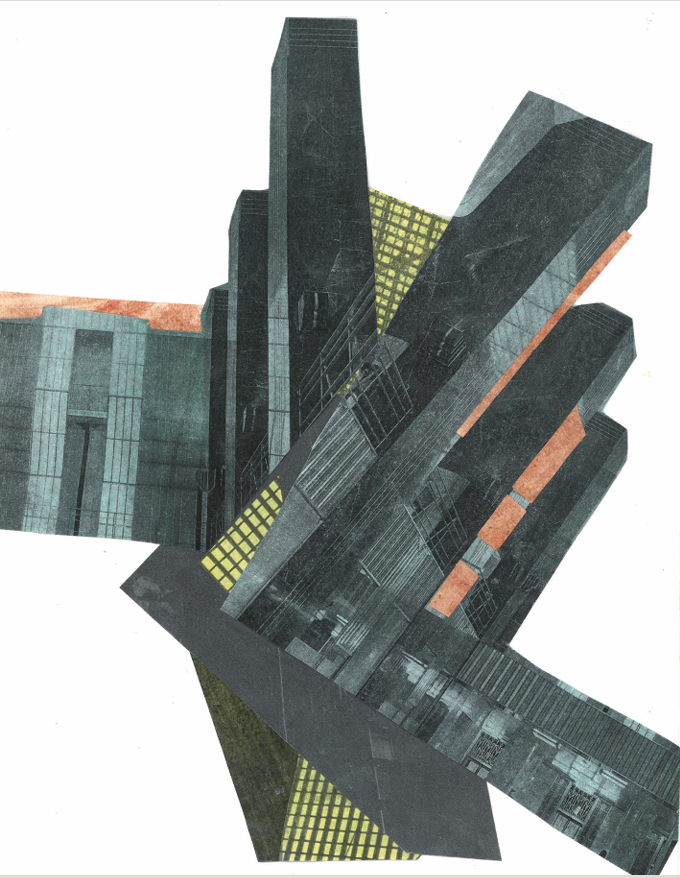
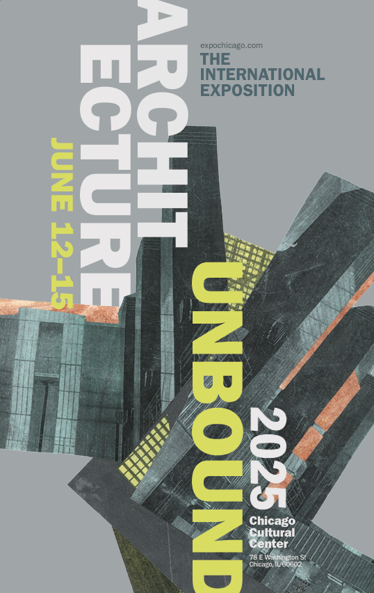
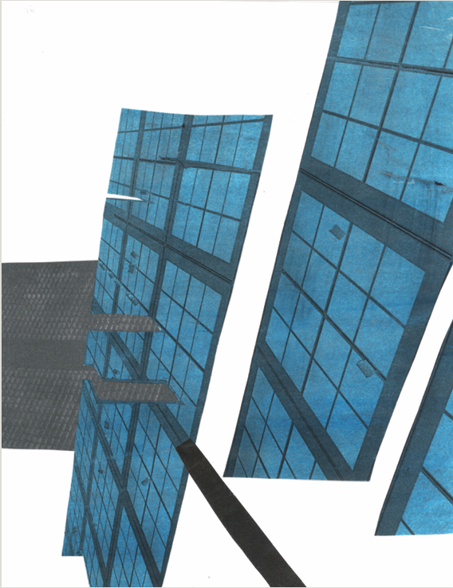

ArchitectureLectureSeries
Designing an Architecture exhibition poster based on the collage images previously developed.
11" x 17"




Designing an Architecture exhibition poster based on the collage images previously developed.
11" x 17"



